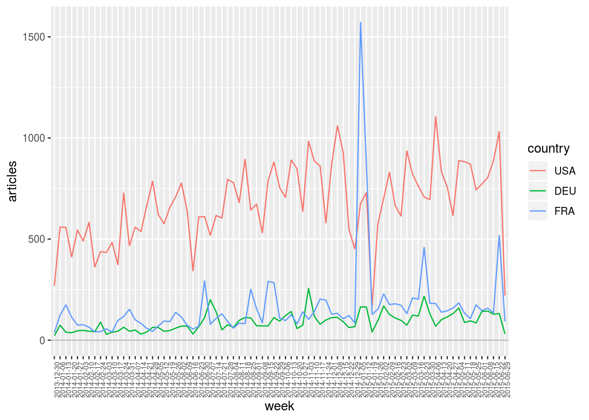
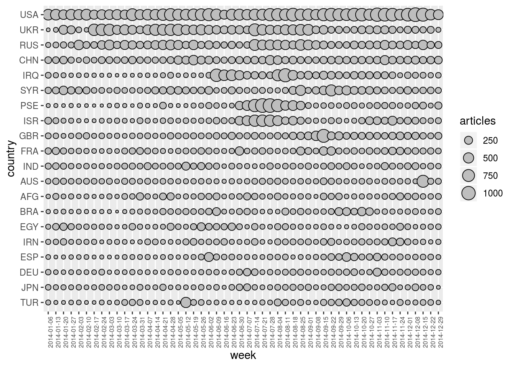
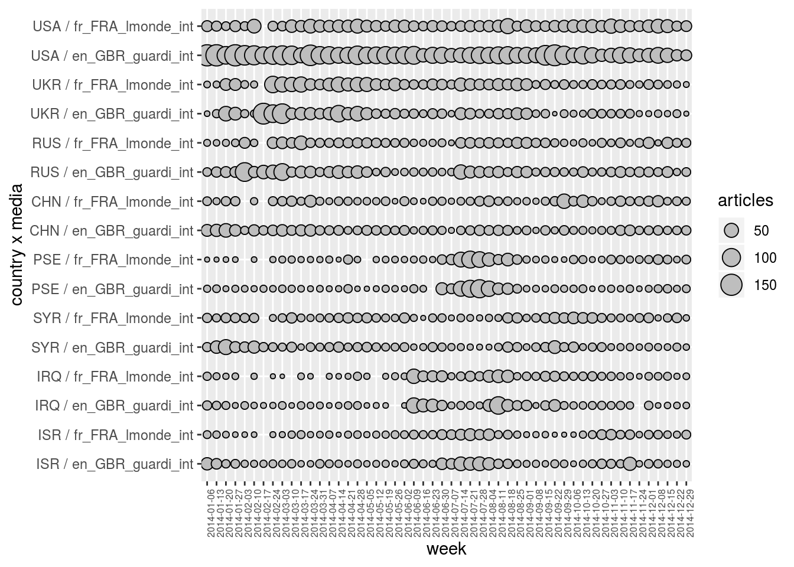

3 Multidimensional Exploration
In this second section, we simultaneously deal with several dimensions. Multidimensional plotting of variables is then possible.
3.1 Selecting two dimensions with select.dim
When selecting two dimensions (or more) with function select.dim, one ends up with a multidimensional representation of the corresponding variables. For example, in the code below, one selects dimensions week and country (in other words, dimension media is aggregated). Each observation hence gives the number of articles published during a given week and talking about a given country.
geomedia %>%
select.dim (week, country) %>%
arrange.elm (country, name) %>%
arrange.elm (week, name) %>%
as.data.frame ()## # A tibble: 11,051 x 3
## week country articles
## <date> <chr> <dbl>
## 1 2013-12-30 AFG 22
## 2 2013-12-30 ARG 6
## 3 2013-12-30 AUS 29.5
## 4 2013-12-30 BEN 2
## 5 2013-12-30 BGD 30
## 6 2013-12-30 BGR 7.67
## 7 2013-12-30 BHS 2
## 8 2013-12-30 BLR 0.5
## 9 2013-12-30 BOL 2.5
## 10 2013-12-30 BRA 10.5
## # … with 11,041 more rows3.2 Plotting bidimensional variables with argument sep.dim.names of plot.var
In order to plot variable articles according to the two selected dimensions, one can use argument sep.dim.names of function plot.var to indicate which one of the two dimensions should be used to separate the data.
geomedia %>%
select.dim (week, country) %>%
arrange.elm (week, name) %>%
filter.elm (country, name %in% c ("USA", "FRA", "DEU")) %>%
plot.var (articles, sep.dim.names = country, type = "line") +
theme (axis.text.x = element_text (angle = 90, size = 6))
In this context, using a point-plot (instead of a line-plot) can be useful to separate a dimension with many elements. (Note that, below, we also use filter.elm on week to only plot data for year 2014.)
geomedia %>%
select.dim (week, country) %>%
filter.elm (week, format (name, "%Y") == "2014") %>%
arrange.elm (week, name) %>%
top_n.elm (country, articles, 20) %>%
arrange.elm (country, desc (articles)) %>%
plot.var (articles, sep.dim.names = country, type = "point") +
theme (axis.text.x = element_text (angle = 90, size = 6))
3.3 Plotting multidimensional variables
It is also possible to separate the data according to several dimensions (with not so many elements) at the same time in order to plot multidimensional variables. For example, the plot below gives the temporal evolution of articles for 8 countries and 2 newspapers.
geomedia %>%
filter.elm (week, format (name, "%Y") == "2014") %>%
arrange.elm (week, name) %>%
top_n.elm (country, articles, 8) %>%
arrange.elm (country, desc (articles)) %>%
filter.elm (media, name %in% c ("fr_FRA_lmonde_int", "en_GBR_guardi_int")) %>%
plot.var (articles, sep.dim.names = list (country, media), type = "point") +
theme (axis.text.x = element_text (angle = 90, size = 6))